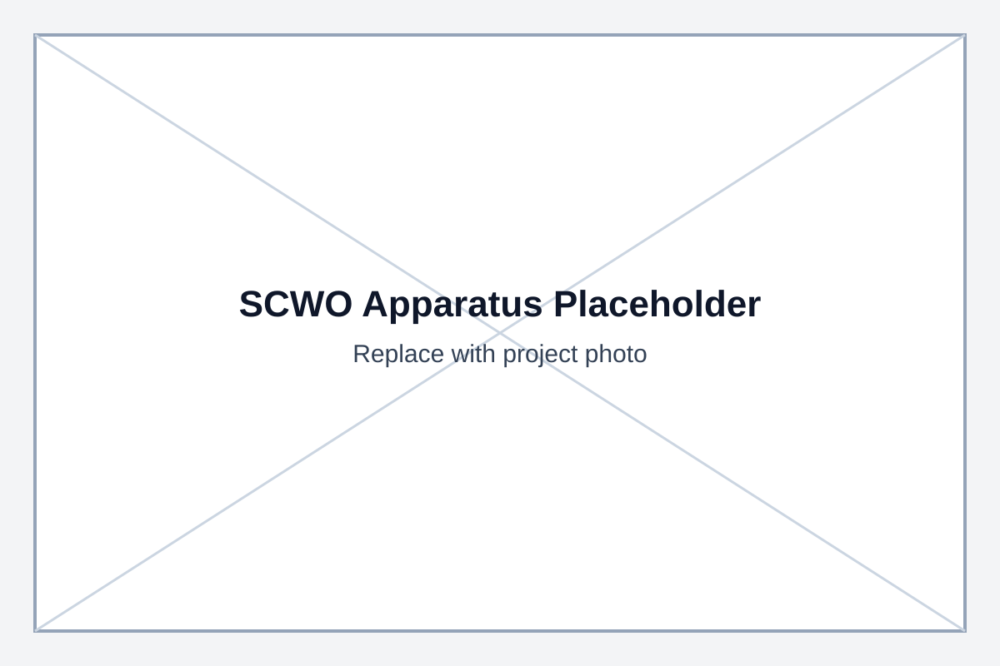
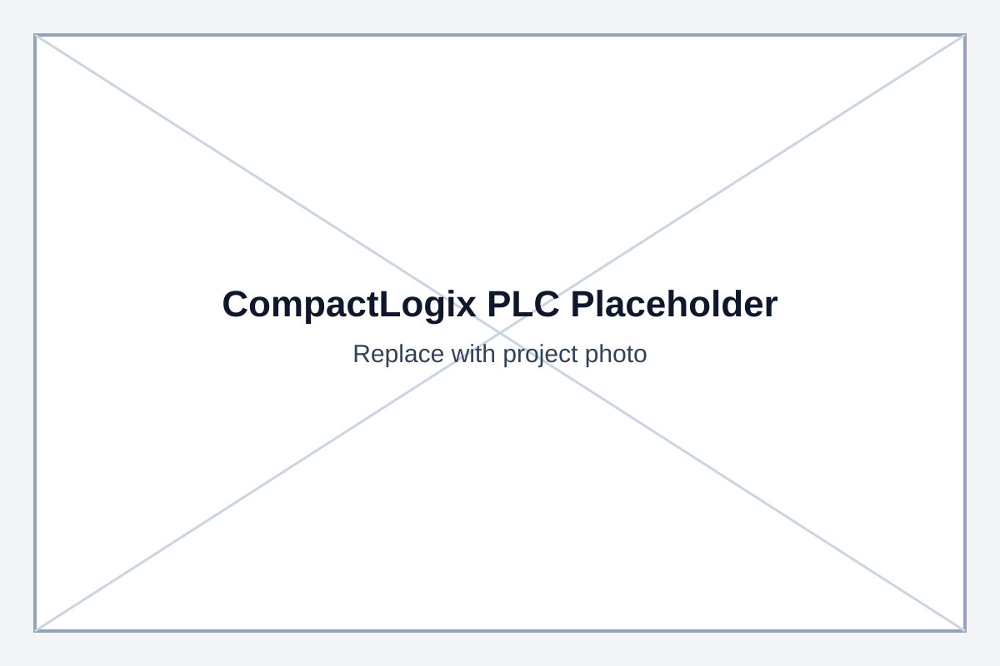
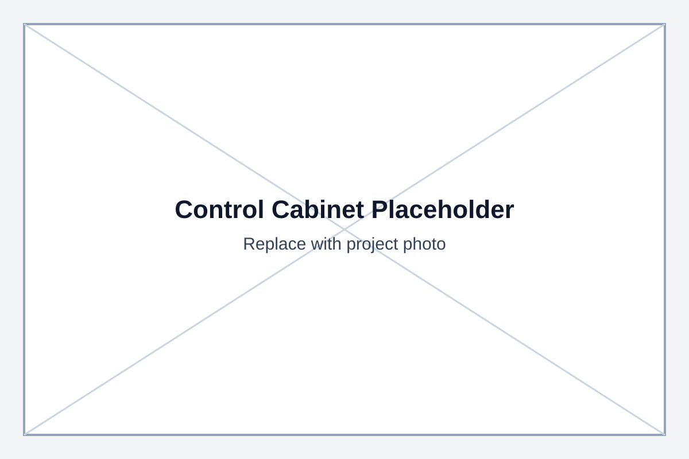
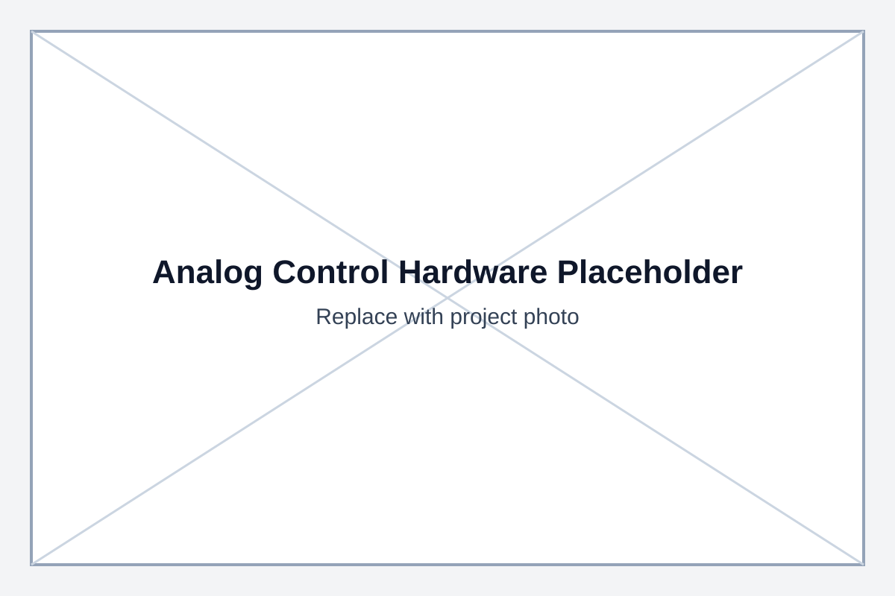
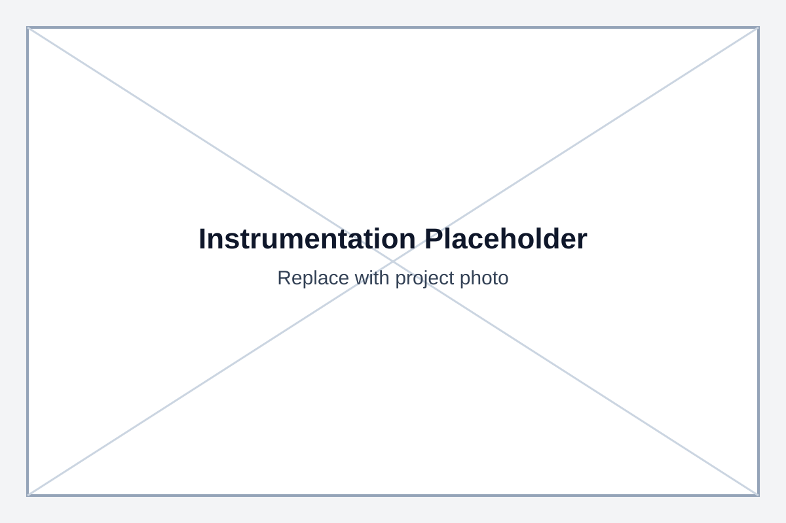
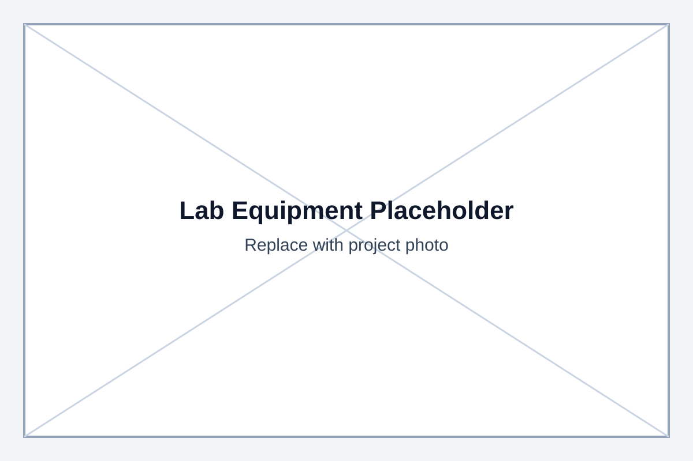
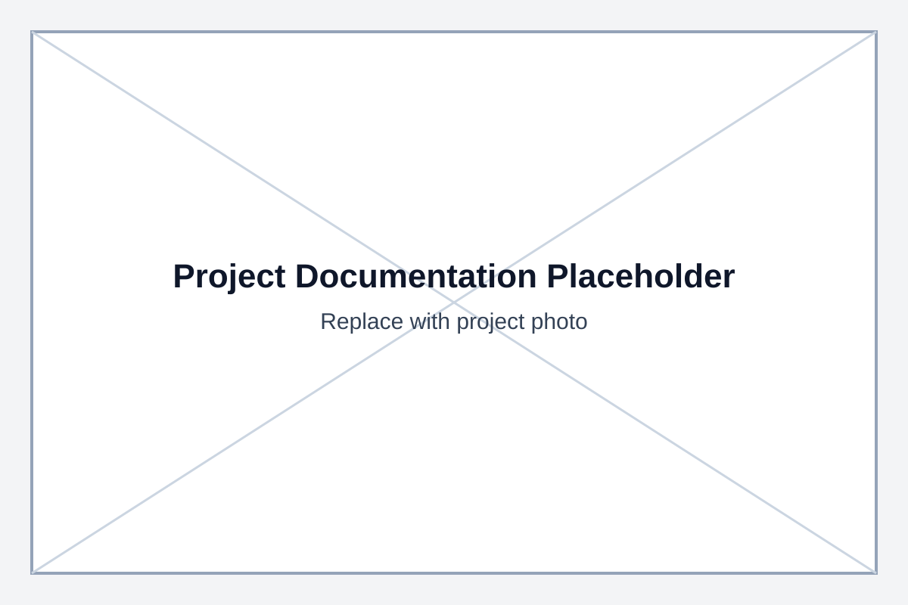

NASA Supercritical Water Oxidation (SCWO) Research
Role: Undergraduate Research Assistant
Organization/Lab: Clemson University [Lab Placeholder]
Dates: [Add Dates]
Summary: Controls and instrumentation support for SCWO hardware and experimental operation.
Engineering Problem
The SCWO system requires robust control and instrumentation coordination to support repeatable operation and safe experimentation under demanding conditions.
Objectives
- Support controls and hardware integration for experimental readiness.
- Improve instrumentation visibility and setup consistency.
- Strengthen documentation for repeatable test workflows.
Approach / Methodology
- Assisted with PLC- and instrumentation-related setup and verification tasks.
- Reviewed and updated procedure/documentation placeholders for operational consistency.
- Supported iterative troubleshooting based on observed system behavior.
Results
[Add measurable test outcomes, validation data, and technical results.]
Skills / Tools Used
Controls, instrumentation, experimental methods, technical documentation, lab hardware integration.
Technologies / Components
CompactLogix PLC, control cabinet hardware, LPU / Leeds & Northrup hardware, analog control hardware, instrumentation, P&ID diagrams.
Project Images and Documentation Placeholders









Optional Documents: [Add PDF / Report Link]
Optional GitHub Link: [Add Repository Link]